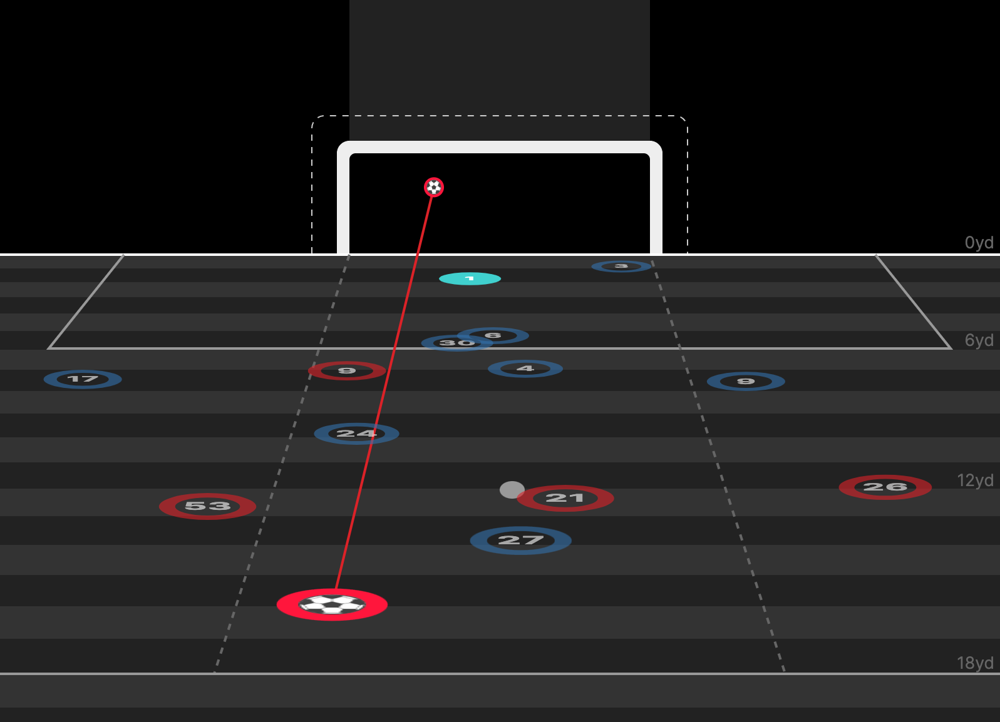
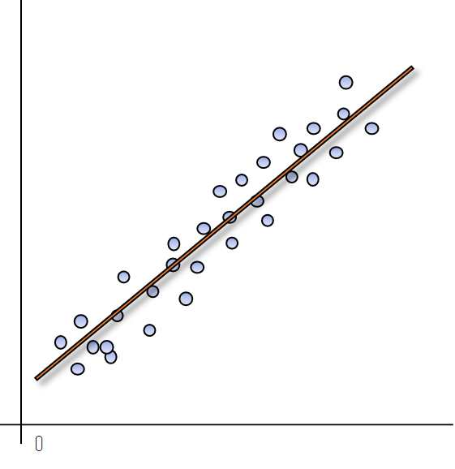

Investigated a Football dataset by deep diving into the probability of a shot being a goal under different circumstances (known as xG models) as part of a Storing, Manipulating and Visualising Data Project

Obtained a Covid dataset containing number of cases, vaccination, deaths etc. Utilised SQL Server Management Studio to explore many interesting parts of the data, e.g. the percentage of people that contracted covid per country or continent.

Transcribed customer support audio calls, evaluate sentiment, search in text and identify common entities to improve customer service!

Obtained bank data which stored different features of its customers and developed Machine Learning algorithms to evaluate which customer features were the most effective in prediciting whether they would leave the bank or not. As part of a Machine Learning with Python module at QMUL.

Fitting and plotting Linear Models whilst calculating fences to remove outliers. Implemented advanced visualisations to represent sports game data using Pandas Dataframes.

Utilised Music and Football data tables through SQL to construct a variety of queries and joins to extract some interesting analysis.
Implemented advanced scientific integration techniques to solve ODEs and plot orbital trajectories of starts in the three body problem over time. As part of a Scientific Computing Project at QMUL.
Manipulating data consisting of the results of the 2018 Fifa World Cup in Pandas Dataframes to extract interesting statistics e.g. mean number of passes per round.
Preparing an analytical report on Apple, including regressions, firm valuations, capital structure and forecasting. As part of a Financial Modelling Project at UEA.

Cleaned Bike Sales data from Kaggle. Utilised Pivot Tables to produce visualisations which was then presented as an interactive dashboard.

Produced interesting insights and visulations around various data job metrics, i.e. salary, job satisfaction, gender etc.

First cleaned movie data from Kaggle and then produced various correlation visualisations, i.e. linear regression, heatmap, scatter plots etc.

Cleaning Housing Data using SQL in SSMS. Utilised CTEs, Parsename, Substrings, Replace and various other SQL commands.

Implemented retrieval augmented generation (RAG) with LangChain to create a chatbot for answering questions about technical documentation